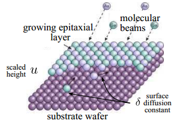
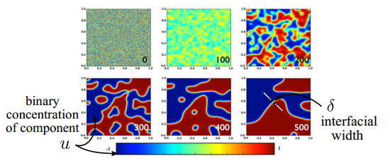
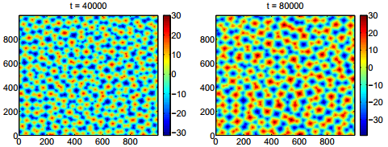
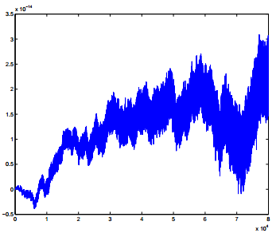
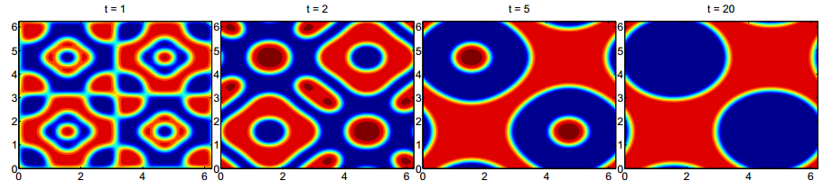
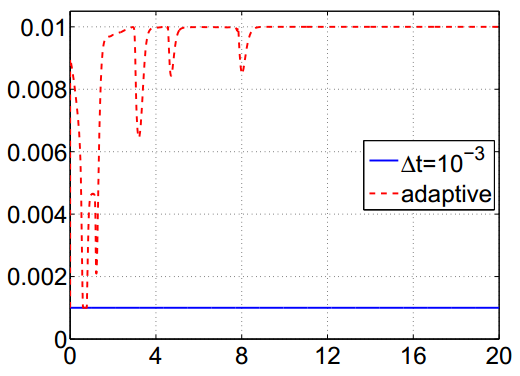
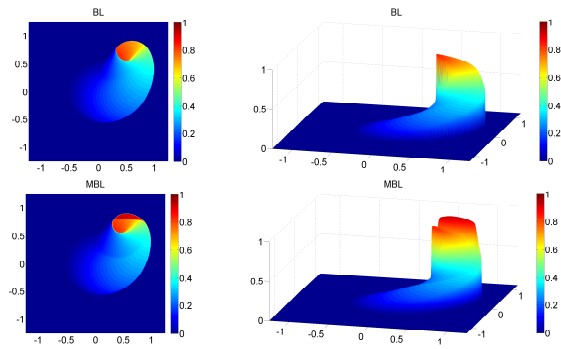

Zhuolin Qu
Numerical methods for PDEs
While most of my recent research is on modeling infectious diseases, I have extensive experience in developing numerical methods for nonlinear PDEs.
Fast operator splitting methods for nonlinear PDEs
The operator splitting methods are divide-and-conquer
strategies to solve the PDEs with operators of different
natures. The main idea is to decompose a complex equation
into simpler sub-equations, which provides great flexibility
in choosing different numerical methods for each
sub-problem.
Phase Field Models
Phase-field models are mathematical models for interfacial
phenomena. They were originally derived for the
microstructure evolution and phase transition, and they have
been extended to many other physical phenomena, such as the
growth of cancerous tumors, phase separation of block
copolymers, and dewetting and rupture of thin liquid films.
The molecular beam epitaxy (MBE) equation with slop selection $$ u_{t}=-\delta \Delta^{2} u+\nabla \cdot\left(|\nabla u|^{2} \nabla u-\nabla u\right), \quad \delta>0.$$ The Cahn-Hilliard equation $$ u_{t}=-\delta \Delta^{2} u+\Delta\left(u^{3}-u\right), \quad \delta>0.$$


Left: Thin film epitaxy (MBE equation): the deposition of a crystalline overlayer on a crystalline substrate. Right: Phase separation (Cahn-Hilliard equation): two components of a binary fluid spontaneously separate and form domains pure in each component


Left and middle: Solution of 2-D MBE equation subject to a random initial data (uniformly distribution). The pyramid edges form a random network over the surface. The cells of the network grow in time via a coarsening process. Right: The mean height remains practically zero at all times, which verifies the mass conservation of the numerical method.


Left four plots: Solution of 2-D
Cahn-Hilliard equation in time, subject to a non-mean-zero
initial condition. Right: Adaptive time-stepping is
used to speed up the computation while still accurately
captures different stages of phase separation.
Buckley-Leverett Equations
In fluid dynamics, the Buckley-Leverett (BL) equation is a
model for two-phase flow in porous medium. The modified
Buckley-Leverett (MBL) has considered the dynamic capillary
pressure that results from difference in the pressures of
the two phases. One application for MBL is on secondary
recovery by water-drive in oil reservoir simulation.
Rotational Modified BL (MBL) equation in 2-D
$$u_t + \nabla\cdot\left(\vec{V}{\displaystyle
\frac{u^2}{u^2+M(1-u)^2}}\right) = \varepsilon\,\Delta\,u +
\varepsilon^2\tau \Delta u_t,\quad \vec{V}=[y,-x] , \quad
\varepsilon>0, \quad \tau>0.$$

Comparison of numerical solutions for BL (top row) and MBL
(bottom row) equations. Initial condition is a smooth 2-D
Gaussian function cut off by a plateau. Left: View
from the top. Right: 3-D view. The numerical
solution for the MBL equation reproduces the non-monotone
profile observed in experiments.
Collaborators
Alexander
Kurganov (Southern University of Science and
Technology, China)
Tao
Tang (Southern University of Science and Technology,
China)
Chiu-Yen
Kao (Claremont McKenna College)
Ying Wang
(University of Oklahoma)
Yuanzheng
Cheng (Goldman Sachs)